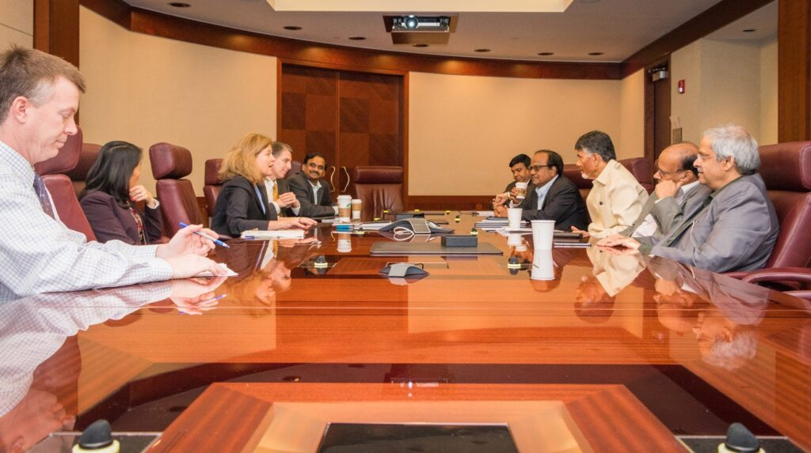
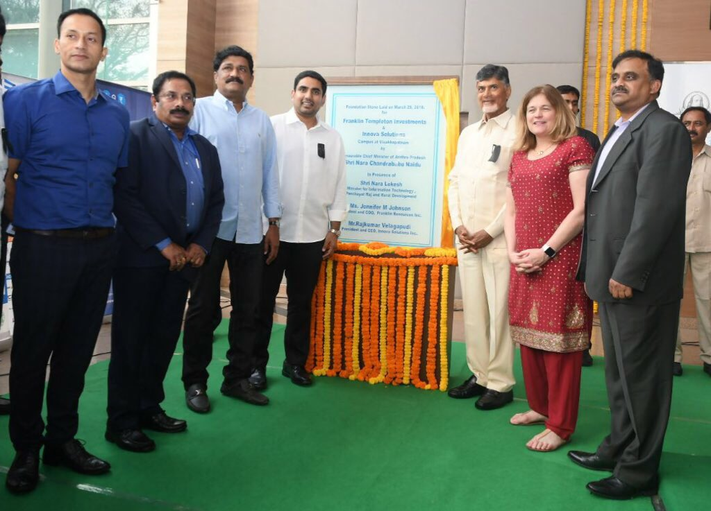
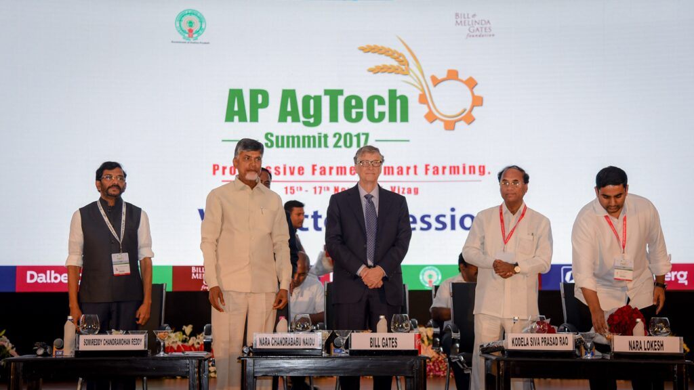
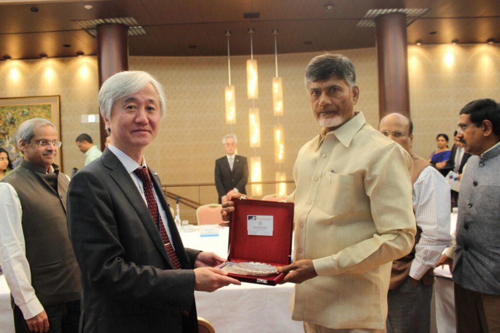
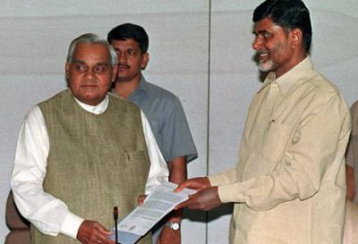
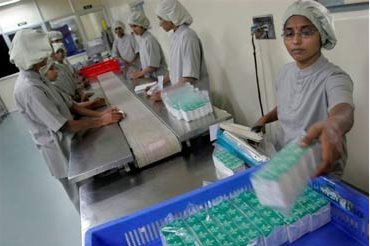
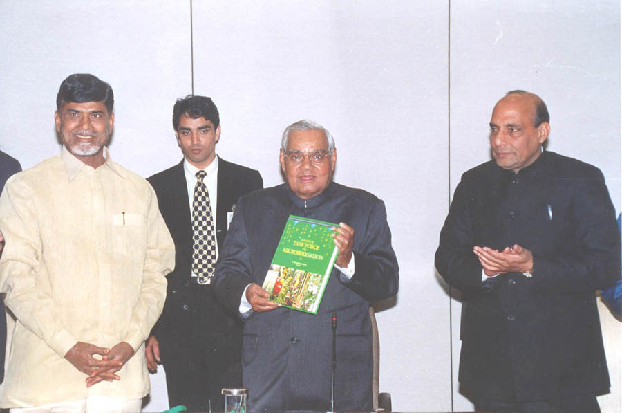
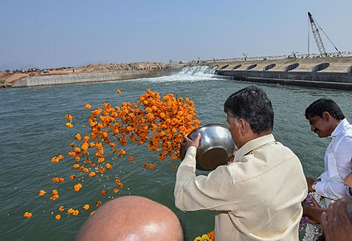

In a public life spanning for more than four decades, he has to his credit many trail-blazing initiatives that brought about revolutionary changes in the economic and social life of the people. Known for embracing technology to make governance people-friendly, he has been a pioneer in furthering the knowledge economy in the country, benefiting many generations of countless young men and women.

NDTV | October 23, 2023 Telugu Desam Party (TDP) chief N…

GVR Subba Rao | The Hindu | 8 December 2023 The Telugu Desam...

The Hindu | November 1, 2023 Fifty-three days after being arrested for allegedl...

M Sambasiva Rao | The Hindu | 8 December 2023 The YSR Congress...

Chief Minister N Chandrababu Naidu took charge at the State secretariat a...



(B Dasarath Reddy, Business Standard January 13, 2018) Acting on a detaile....

GVR Subba Rao | The Hindu | 8 December 2023 The Telugu Desam...
The Hindu | November 1, 2023 Fifty-three days after being arrested for allegedl...

M Sambasiva Rao | The Hindu | 8 December 2023 The YSR Congress...

Chief Minister N Chandrababu Naidu took charge at the State secretariat a...

Chandrababu Naidu addressing a public meeting at Amalapuram, Konaseema, as part of 'Guarantee to Your Future' programme. The YSRCP government, if returned to power, will leave nothing for the people of the state, he warned.
Syed Amin Jafri | Rediff.com | November 22, 2002 A high-level US..........

George Iype | Rediff.com | February 8, 2000 Andhra Pradesh Chief Minister.....

Govt of AP | Chandrababu Naidu This is the full text of the Andhra Pradesh.....

CSDS Team with K.C. Suri | Frontline | November 06, 1999 IT is easy to read too ...

Down to Earth | 15 February 1999 chandrababu Naidu is known more f.........